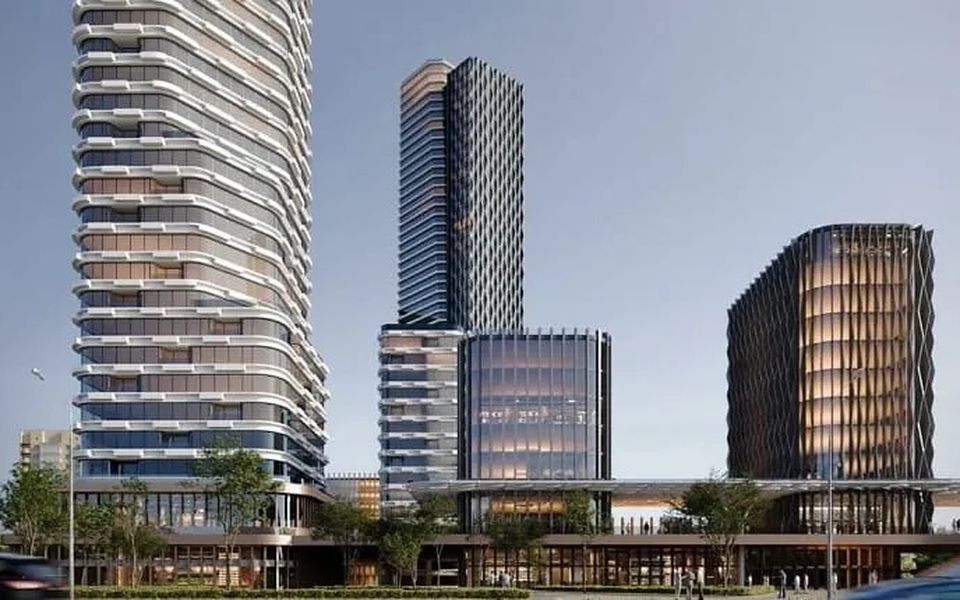

Дома / Верн
Премиум · Раменки район
Верн Неометрия (Capital Alliance: Capital Group и Alias Group)
пр-т Вернадского, вл. 10 · анонс · продаж ещё нет

На заметку:
Две башни на проспекте Вернадского — 190 и 230 метров, до 54 этажей, одна в силуэте сталинской высотки со шпилем, другая с террасами. Вокруг — низкие корпуса, общая площадь больше 188 тысяч м², на месте недостроенного здания «Рособоронэкспорта». Проект ведёт «Неометрия» вместе с Capital Group и Alias Group. Первая очередь — 560 квартир в малоэтажных корпусах. Каталоги называют класс по-разному, от бизнеса до элита; по нашей мерке это премиум с минусом за адрес — он за Третьим кольцом. До «Университета» — 5–10 минут пешком. Проектной декларации и продаж пока нет: в сентябре девелопер заканчивал оформление разрешений на первую очередь. Поэтому паспорт закрыт на 2 проверки из 9 — итог поставим, когда появятся декларация и цифры.
Паспорт дома
Девять проверок,
закрыто 2 из 9
Паспорт собираем по открытым данным: проектная декларация, карты, рейтинг застройщика. «Проверяем» — значит, ответа с источником пока нет, и мы его не додумываем. «Нет» по проверке — это минус; сколько минусов выдерживает дом, зависит от класса. Красная линия — остановленные стройки у застройщика, продажа мимо эскроу или ТЭЦ, мусорный завод и полигон рядом: тогда отметки не будет.
| Проверка | Как у дома | Мерка класса | Ответ |
|---|---|---|---|
| 01Адрес и класс | пр-т Вернадского, вл. 10, Раменки район03.10.2026 | премиум — внутри Третьего кольца | нет |
| 02Окружение | — | ТЭЦ, мусорный завод и полигон не ближе 150 м (иначе красная линия), промзона и магистраль тоже | проверяем |
| 03Повседневность | — | метро, МЦК или МЦД до 15 минут пешком | проверяем |
| 04Плотность | 560 квартиркаталоги, декларации, сайты застройщиков (база NOTA) · 03.10.2026 | не больше типичного дома класса — 665, на этаже до 5 | да |
| 05Машина | — | от 1,5 места на квартиру | проверяем |
| 06Застройщиккрасная линия | Неометрия (Capital Alliance: Capital Group и Alias Group)https://erzrf.ru/zastroyschiki/brand/1734816001 · https://realty.ria.ru/20240124/developery-1923148977.html | без остановленных строек и банкротств (иначе красная линия), рейтинг ЕРЗ.РФ от 3 из 5 | проверяем |
| 07Сроки дома | анонс: проект, продажи не начаты, разрешения на 1-ю очередь оформляются (Москвич Mag 21.09.2026), срока ввода нетhttps://novostroev.ru/novostroyki/moskva/zao/ramenki/vernadskogo-10/ · https://moskvichmag.ru/gorod/raznourovnevyj-zolotistyj-zhk-na-200-tys-kv-m-postroyat-na-prospekte-vernadskogo/ | перенос срока не больше полугода | проверяем |
| 08Юридикакрасная линия | проектной декларации нет · по novostroev — квартиры, продажи не начатыhttps://novostroev.ru/novostroyki/moskva/zao/ramenki/vernadskogo-10/ | продажа через эскроу, документы в порядке (иначе красная линия) | проверяем |
| 09Цена против класса | — | не дороже медианы класса в районе больше чем на 30% | проверяем |
Ещё восемь проверок — архитектура, квартиры, двор, воздух, содержание, соседи, что построят рядом и ликвидность — делаем, когда дом попадает в вашу подборку. Как устроены все 17 — в методе.
Что проверить на месте
Вопросы
для просмотра
- Проектная декларация и эскроу: до них не платить — платная бронь без декларации у нас красная линия
- Кто специализированный застройщик и какой у него рейтинг по срокам: у партнёра Capital Group на ЕРЗ.РФ — 1,5 из 5
- Сколько машиномест на квартиру: норма премиума — 1,5
Источники
- novostroev.ru
- (28.09.2026):
- novostroyrf.ru
- вл.
- moskvichmag.ru
- (21.09.2026):
- тыс.
- realty.ria.ru
- (24.01.2024):
- realty.ria.ru
- prawdom.ru
- 03.10.2026
Данные базы NOTA на 3 октября 2026. Если застройщик раскроет новые цифры, итог пересчитаем.